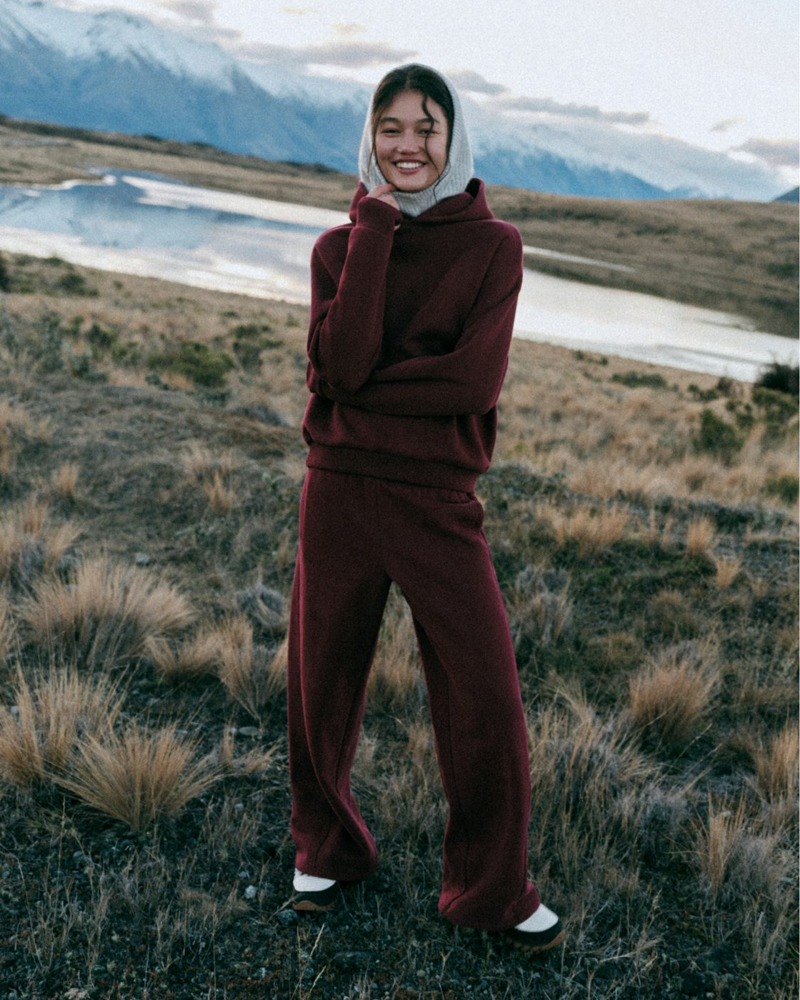
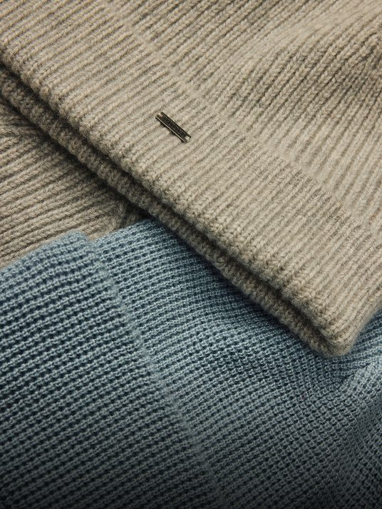
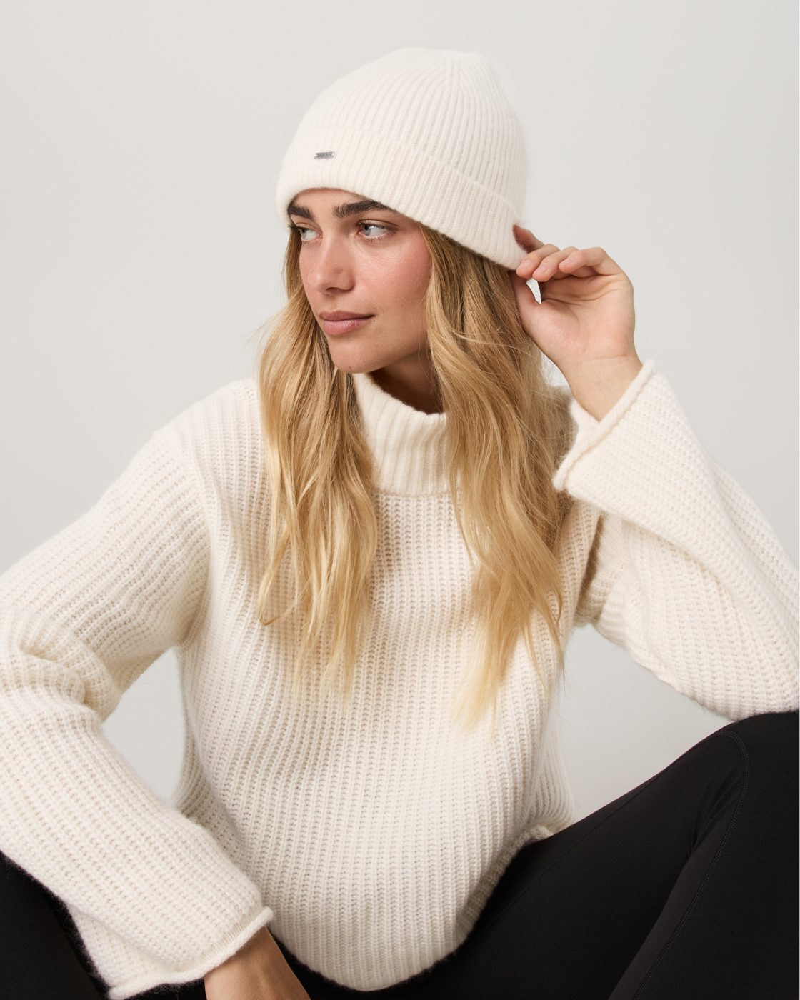

Vuori
Company study · 2026-11-16
Cold clear light, wide landscape, soft knit. The fall campaign puts easy, oat and oxblood garments in New Zealand-style alpine country, so activewear reads as outdoor leisure. Positioning is premium performance with a calm, natural and slightly artful tone.
 (01)
(01)
 (02)
(02)


(03)

(04) (05)
(05)
 (06)
(06)


(07)Palette · measured from images
#101414#DBDCDE#4C231B#2E352F#7F6F5D#A79986Visual themes
- Alpine leisure
- Key motifs: snow peaks, tussock grass, lake shore, clear blue sky. Sub motifs: wind, long walks, caps and beanies.
- Soft layers
- Key motifs: fleece, rib knit, waffle knit, quilted vest. Sub motifs: tonal oat, cream and gray sets; knotted sweatshirt at the waist.
- Active city
- Key motifs: running track, stairs, urban walls, studio sport. Sub motifs: sports bra and legging sets, motion blur.
- Quiet objects
- Key motifs: tote, socks with sneakers, gift card with ribbon. Sub motifs: warm wood, sage and brown.
Hero material
The look is a soft, matte, brushed or waffle-textured knit in oat and gray, shown close to the skin and on the move. Close-up at (04).
Visual elements
- Photography
- Natural daylight outdoors, strong sky, wide landscape and mid-length figures; tonal studio shots on light gray for accessories and women’s looks.
- Type and graphics
- Lowercase serif wordmark on ribbon and card (observed), plain sans for tiles; large numeral ‘10’ for the anniversary.
- Layout habits
- Category tiles in portrait 4:5, navigation spotlights, carousels; models always full figure or three-quarter.
- Detail
- Fold-over waffle knit, ribbed cuff, small tonal logo patch.
Visual story
Campaign hero, popular categories (pants, jackets, hoodies, joggers, shirts, shorts, sweaters, accessories), women’s carousel (active, cozy, matching sets, best sellers, outerwear), navigation spotlights, a 10-year anniversary tile. Place first (mountains, sky), garment second, category third.
Notable products
- DreamKnit and BlissBlend pieces
- The soft knit carries the brand touch.
- Fleece sets
- Show tonal color in outdoor scenes (oxblood, cream).
- Accessories (tote, beanie, socks)
- Carry the palette into small objects.
Method and limits
- Palette basis
- Board images (01) to (04), (06) and (07) plus five more campaign or navigation images (outerwear, a lookbook image, a studio sports image, a runner); two runs combined, six clusters kept
- Limits
- The close-up (04) is a 536 px promotional tile: low resolution.
Credits and licenses
(01) Man in cream overshirt on tussock grass with lake and mountains, fall campaign. Vuori. Brand image, study use. source
(02) Man walking in cream fleece against blue sky and snow peaks, fleece navigation spotlight. Vuori. Brand image, study use. source
(03) Woman in oxblood fleece set at a lake shore with grass and mountains. Vuori. Brand image, study use. source
(04) Close-up of oat waffle knit and blue-gray knit, stocking carousel tile (low resolution). Vuori. Brand image, study use. source
(05) Tan canvas tote with cream insulated bottle, accessories spotlight. Vuori. Brand image, study use. source
(06) Gift card on dark oxblood wood with sage ribbon printed with the wordmark. Vuori. Brand image, study use. source
(07) Model in cream rib-knit sweater and beanie, studio, beanie spotlight. Vuori. Brand image, study use. source